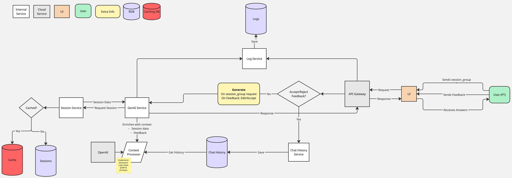

Design Document: AI-Powered PT Messaging System
Problem/Motivation
Physical Therapists (PTs) currently manually draft messages to patients following each therapy session, based on session results and predefined guidelines. This process is time-consuming and inconsistent in quality. Automating message generation will streamline PT workflows and ensure high-quality, empathetic, and engaging communication with patients.
Motivation
- Efficiency: Reduce the time PTs spend on repetitive messaging tasks.
- Consistency: Standardize messaging quality across all PTs.
- Engagement: Maintain patient motivation and adherence to therapy.
- Scalability: Support a growing number of patients without increasing PT workload.
Overview of the Solution
The proposed solution is an AI-powered system that generates personalized messages for PTs to review and send. It integrates with Sword's Digital Physical Therapy platform and uses OpenAI's GPT models to create messages based on session results.
Key Features
- AI-generated messages tailored to session outcomes (
ok or nok).
- Editable suggestions for PTs to customize before sending.
- Context-aware personalization using patient history.
- Compliance with tone, structure, and engagement guidelines.
- Secure, scalable deployment.
Success Metrics
| Success Metric |
Target |
How to Measure |
| PT message drafting time |
>50% time saved per message |
Compare timestamps between message generation and sending before and after implementation; track average time spent in message editor |
| PT adoption rate |
>80% of messages accepted or minimally edited |
Track percentage of AI-generated messages that are sent with no edits or minimal edits (<20% content change) |
| Patient engagement |
10-15% increase in session adherence |
Compare session completion rates before and after implementation; measure percentage of scheduled sessions completed within recommended timeframe |
| Message rejection rate |
<5% of messages rejected |
Track percentage of AI-generated messages that PTs discard and write from scratch instead |
| Patient satisfaction |
>85% positive feedback on communication quality |
Survey patients on communication quality; analyze sentiment in patient responses to PT messages |
| Cost efficiency |
<$0.10 average cost per message generated |
Calculate total API costs and infrastructure expenses divided by number of messages generated |
Objectives and Key Results (OKRs)
Objective 1: Optimize PT Workflow Efficiency
- KR1: Reduce message drafting time by 60% within 3 months of full deployment
- KR2: Decrease average time spent on patient communication by 40% per PT within 6 months
- KR3: Increase PT capacity (patients per PT) by 25% within 9 months
Objective 2: Enhance Message Quality and Consistency
- KR1: Achieve 85% message acceptance rate (without edits) by PTs within 4 months
- KR2: Maintain message quality score of 4.5/5 based on PT feedback
- KR3: Reduce message guideline violations by 90% compared to manual messaging
Objective 3: Improve Patient Engagement and Outcomes
- KR1: Increase patient session adherence by 15% within 6 months
- KR2: Improve patient satisfaction scores related to PT communication by 20%
- KR3: Reduce patient program dropout rates by 10% within 9 months
Objective 4: Ensure System Reliability and Scalability
- KR1: Achieve 99.9% system uptime
- KR2: Maintain message generation latency under 3 seconds for 95% of requests
- KR3: Support 3x growth in message volume without performance degradation
Methodology
AI Model Selection
- Primary Model: GPT-4o-mini (fast and cheap) via OpenAI's API for message generation.
- Fallback Model: GPT-4o (more powerful, but more expensive) for ensuring quality.
- LLM Workflow: Use LLM workflows (graphs) for enhanced context and quality (i.e. states and transitions).
- Contextual Retrieval: Sessions integration for efficient patient history access; relational database for patient history.
- Fine-tuning Strategy (Optional): Collect and annotate high-quality PT messages for fine-tuning; might not be reuired if prompts, context and model are powerful enough.
Message Generation Pipeline
- Input Preparation: Gather session results (with
ok/nok), previous interactions, and patient engagement data.
- Prompt Engineering: Construct structured prompts to guide the model's output.
- Model Inference: Generate message suggestions using OpenAI's API.
- Post-Processing - Guardrails: Validate message format, remove redundancy, and apply business rules.
- UI Integration: Display the message with options to accept, edit, or reject.
- Feedback Loop: Capture PT feedback for continuous model improvement.
Data Requirements
- Session Data: Exercise results, completion metrics, and session classification
- Patient History: Previous messages, session patterns, reported issues
- PT Preferences: Communication style, common edits, rejection patterns
- Guideline Database: Structured repository of messaging best practices
Compliance Considerations
- Ensure patient data privacy (compliance with GDPR, healthcare data regulation (e.g. HIPAA) and others).
- Maintain a human-in-the-loop approach for PT oversight.
- Avoid AI over-reliance by allowing PTs to override AI suggestions and inplace edits.
- Regular audit of message quality and compliance with guidelines (e.g. LLM as Judge, weekly flagged interactions).
Implementation Plan
Technical Architecture

Technical Stack
- Backend: Python (FastAPI) for API endpoints with async support.
- Frontend: React components integrated with existing PT portal.
- Database:
- PostgreSQL for patient session history and structured data.
- Redis for caching frequent requests and rate limiting.
- Potential add-on: PGVector or Qdrant for vector embeddings and semantic search.
- Cloud Provider: AWS (Lambda, S3, DynamoDB) for scalable infrastructure.
- CI/CD: GitHub Actions for deployment automation with canary releases.
- Monitoring:
- AWS CloudWatch for infrastructure metrics.
- Datadog for application performance monitoring.
- Prometheus for custom metrics collection.
- Grafana for visualization.
- Logging: AWS CloudWatch and/or ELK stack (Elasticsearch, Logstash, Kibana) for structured logging.
- Security: AWS KMS for encryption, AWS WAF for API protection.
Data Privacy and Governance
- Data Minimization: Process only necessary patient data for message generation.
- Encryption: End-to-end encryption for data in transit and at rest.
- Access Control: Role-based access with principle of least privilege.
- Audit Trail: Comprehensive logging of all data access and modifications.
- Retention Policy: Clearly defined data retention and deletion schedules.
- Data Processing Agreement: Compliance with OpenAI's terms of service.
Monitoring and Evaluation Strategy
- Model Performance:
- Message acceptance rate
- Edit distance metrics
- Sentiment analysis of PT feedback
- System Performance:
- API latency and throughput
- Error rates and types
- Resource utilization
- Business Impact:
- PT time savings
- Patient engagement metrics
- Cost per message
Deployment Considerations
- Initial rollout to a small cohort of PTs for feedback (10% of team).
- A/B testing of different prompt strategies with the pilot group.
- Gradual expansion based on performance metrics (20% > 50% > 100%).
- Ongoing model monitoring and improvement cycle.
- Feature flag system to quickly disable AI generation if issues arise.
Main Delivery Milestones and Timeline
| Working Block |
Milestone |
Man/Sprint |
Dependencies |
| Phase 1: Research & Planning |
Model selection & feasibility study |
2 / Sprint 1 |
None |
|
Finalize prompt engineering strategy |
2 / Sprint 2 |
Model selection |
| Phase 2: Prototype Development |
Backend API implementation |
3 / Sprint 3 |
Prompt engineering completed |
|
Model integration & message generation |
3 / Sprint 4 |
Backend API ready |
|
UI integration for PT feedback |
2 / Sprint 5 |
Model integration completed |
| Phase 3: Testing & Refinement |
Internal testing with PTs |
3 / Sprint 6 |
UI integration completed |
|
Iterate on model and feedback loop |
3 / Sprint 7 |
Internal testing results |
| Phase 4: Deployment & Scaling |
Pilot deployment to select PTs |
3 / Sprint 8 |
Model iteration complete |
|
Performance monitoring & adjustments |
2 / Sprint 9-10 |
Pilot deployment |
|
Full rollout |
3 / Sprint 10 |
Performance monitoring results |
| Phase 5: Optimization & Expansion |
Cost optimization strategies |
2 / Sprint 11 |
Full rollout complete |
|
Implement feedback-based fine-tuning |
3 / Sprint 12 |
Sufficient feedback collected |
|
Analytics dashboard for PTs |
2 / Sprint 13 |
Fine-tuning implementation |
Cost Analysis
| Component |
Estimated Monthly Cost |
Notes |
| OpenAI API Usage |
$1,500 - $3,000 |
Based on 50,000 messages/month, varies with length |
| AWS Infrastructure |
$800 - $1,200 |
Includes Lambda, S3, DynamoDB, CloudWatch |
| Vector Database |
$300 - $500 |
Pinecone or similar service |
| Monitoring & Logging |
$200 - $400 |
ELK stack, Datadog |
| Total Monthly Cost |
$2,800 - $5,100 |
Expected to decrease with optimization |
Other Relevant Considerations
Potential Shortcuts
- Use OpenAI's API directly before fine-tuning for faster implementation.
- Deploy a rule-based fallback system for low-confidence AI outputs.
- Leverage existing Sword infrastructure for quicker integration.
- Implement a template-based approach for common message types before full AI solution.
Risks & Mitigation
| Risk |
Impact |
Probability |
Mitigation Strategy |
| AI Output Quality |
High |
Medium |
Continuous monitoring, human review, robust testing |
| PT Adoption Resistance |
High |
Medium |
User-friendly UI, training sessions, PT champions |
| Scalability Concerns |
Medium |
Low |
Load testing, optimize API calls, caching |
| Data Privacy Breach |
High |
Low |
End-to-end encryption, access controls, audits |
| OpenAI API Changes |
Medium |
Medium |
Model abstraction layer, fallback options |
| Cost Overruns |
Medium |
Medium |
Budget monitoring, cost-saving optimizations |
Future Enhancements
- Automated feedback loop to refine AI-generated messages.
- Multilingual support for global patient reach.
- Patient sentiment analysis to improve engagement strategies.
- Smart scheduling of check-ins based on adherence patterns.
- Voice-to-text integration for PTs to quickly customize messages.
- Message effectiveness analytics to correlate with patient outcomes.
- Expanded message types beyond post-session feedback.
Success Criteria for Production Release
- Message acceptance rate ≥ 80% in pilot group
- PT time savings ≥ 50% compared to manual messaging
- Zero high-severity bugs or data privacy issues
- System latency < 3 seconds for 95th percentile
- Positive feedback from ≥ 75% of pilot PTs